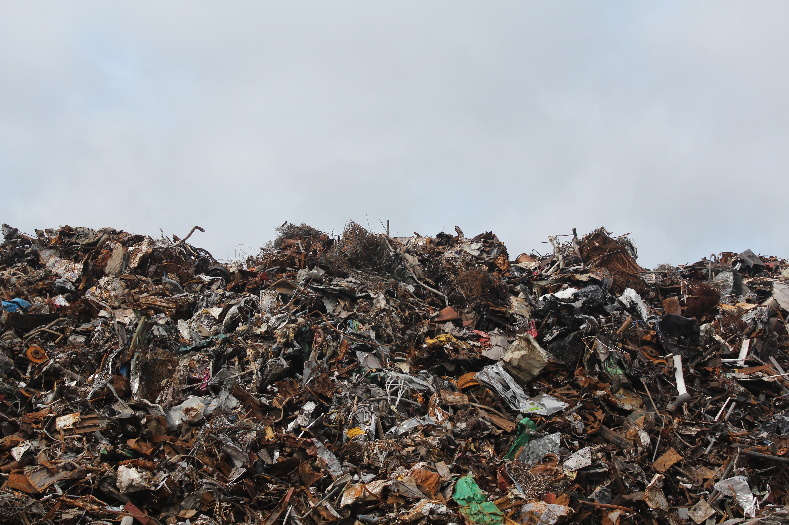
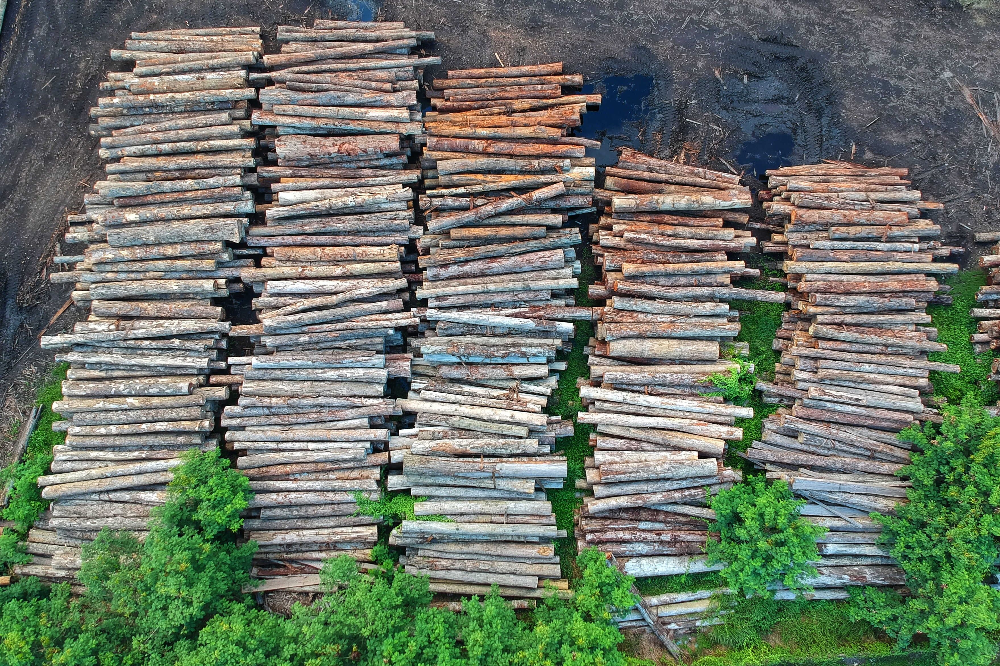

Global Warming
1. What is Climate Change?
Climate change is the long-term change in the mean weather patterns that define Earth's local, regional, and global climate. These changes have a widely observed effect synonymous with the term.
2. Who caused Climate Change?
There are several causes of climate change. However, most considered that the use of fossil fuel is one of the main causes. Global Warming can be defined as the long-term Warming of the Earth's climate system since the pre-industrial period (1850-1900) due to human activities (primarily the burning of fossil fuels). The burning of fossil fuels generates many greenhouse gases such as carbon dioxide. Global Warming and greenhouse gas emission is just one aspect of climate change. Our ocean also absorbs a quarter of all human-made carbon emissions, making it more acidic than ever before. It causes severe impacts on marine ecosystem.(https://climate.nasa.gov/resources/global-warming-vs-climate-change/#:~:text=What%20is%20Climate%20Change%3F,are%20synonymous%20with%20the%20term. )

Food waste also contributes to climate change. A third of all the food produced in the world is wasted. Most of this food waste ends up in dumpsites or landfills. When organic waste decomposes, carbon dioxide and methane gas are created. Both carbon dioxide and methane are greenhouse gases, which contribute to global warming and climate change. (https://www.sprep.org/climate_change/PYCC/documents/ccwaste.pdf )

Deforestation and other land use has has a impact on climate change. Acitivies such as harvest peat and manage grasslands and wetlands produce about one-third of humanity's greenhouse gas emission,including more than 40 percent of methane. (https://www.npr.org/sections/thesalt/2019/08/08/748416223/to-slow-global-warming-u-n-warns-agriculture-must-change)
3. Effects of Climate Change? (https://ec.europa.eu/clima/change/consequences_en )
a). Melting ice sheets and rising sea levels
b). Extreme weather
1). Flood
2). The result is water shortages in some areas.
c). Area Influences
1). Southern and Central Europe Forest fires and droughts
2) Mediterranean region Desiccation, Drought and wildfires
3) Northern Europe Flood
4) developing country Depends heavily on the natural environment. Are the worst affected countries.
d) People Health (https://health2016.globalchange.gov/ )
1). Temperature-related death and illness (Impair the body's ability to regulate body temperature or cause direct or indirect health complications)
I. Loss of internal temperature control: heat cramp, Heat exhaustion, heart disease and hyperthermia
II. extreme temperature: Cardiovascular diseases, respiratory diseases, cerebrovascular diseases and diabetes.
2). Impact of air quality
I. affects outdoor air pollutants (e.g., ground-level ozone)
II. Particulate matter. More and more carbon dioxide (and CO1)
III. Respiratory and cardiovascular systems that can negatively affect the body.
e). water-related disease
Factors associated with climate change affect the growth, survival, transmission, and virulence or toxicity of pathogens of water-related diseases.
f). Impact food
Higher CO2 concentrations stimulate growth and carbohydrate production in some plants but reduce protein and essential minerals in many widely consumed crops, including wheat, rice and potatoes.
4. How to solve Climate Change?

One way to help this issue of Climate Change is to use renewable energy sources such as solar and wind energy. Likely, many countries have started their project of using renewable energy as the substitution coal-burning power plants. Today, 314,000 wind turbines provide 3.7% of the world's electricity. Also, we see an increase in solar farms because their cost is less per watt to install and more efficient at converting sunlight into electricity than rooftop solar.(https://www.greenamerica.org/climate-change-100-reasons-hope/top-10-solutions-reverse-climate-change )
We can also reduce car emissions by riding a bike or choosing public transportations such as bus and subway. The bikes require no fossil fuels, and it is an excellent exercise in general. Choosing public transportation can reduce the emission per person per mile.
We should also trying to restore forest as a community or countries. The loss of tropical forests alone accounts for 16 to 19 per cent of greenhouse gas emissions from human activities. The 2014 New York Declaration on Forests affirms this goal and increases the cumulative goal of restoring 865 million acres globally by 2030. The goal is to remove a total of 12 to 33 gigatons of carbon dioxide from the atmosphere and then turn it back onto land.
Girl Education is also important to solve the issue. Today, more than 130 million girls are denied the basic right to go to school and build a foundation for their lives. The situation is most acute in middle school classrooms. The education gap is also important to global warming.